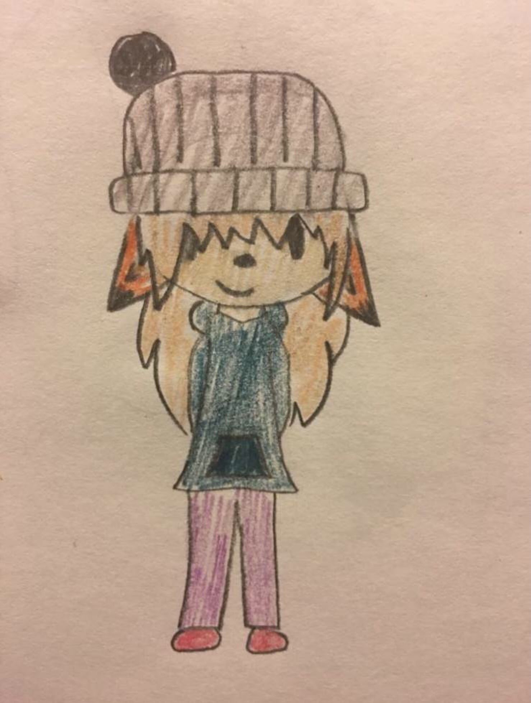

Faelyn the fox is a character inspired by the PlayStation exclusive music video game PaRappa the Rapper. She lives in PaRappa Town, which is the main setting of the game. She is 16 years old, and her birthday is April 16th. She is very charismatic and will always believe in herself if something doesn't go her way, or if something goes wrong, and it is very rare to see her sad or pessimistic about something. Making friends is very easy for her due to her outgoing and confident personality. Her Myer Briggs personality type is ESFJ-A, or Assertive Consul. In her free time, she likes to play rhythm games such as Rhythm Heaven or Friday Night Funkin'. She is rarely ever seen without her beanie because it means a lot to her. She got it as a birthday gift from her mother (who made it herself) on her 14th birthday. It also reminds her of PaRappa, who is her idol. Now, she wears it every time she goes out somewhere. Don't try to take her beanie even as a joke, she will get mad. She probably won't like you afterwards either. She would rather support her friends when fighting an enemy than fight along with them. But if she has no other choice, her self-confidence and her ability to work with others will get her far.